Eating Utensil Holder
Project Information
Company: Level The Curve
Task
Finalizing the design of the eating utensil holder to prepare for mass manufacturing and distribution.
Deliverables
Reverse engineered and updated the CAD model for simplicity, with a new and improved design.
The Project
To create a device that will hold eating utensils (forks and spoons) of various sizes for individuals with hand dexterity issues.
Initial Design
The eating utensil holder was near completion, but had issues with asymmetrical models, incorrect braille, cracks, and other inconsistencies.
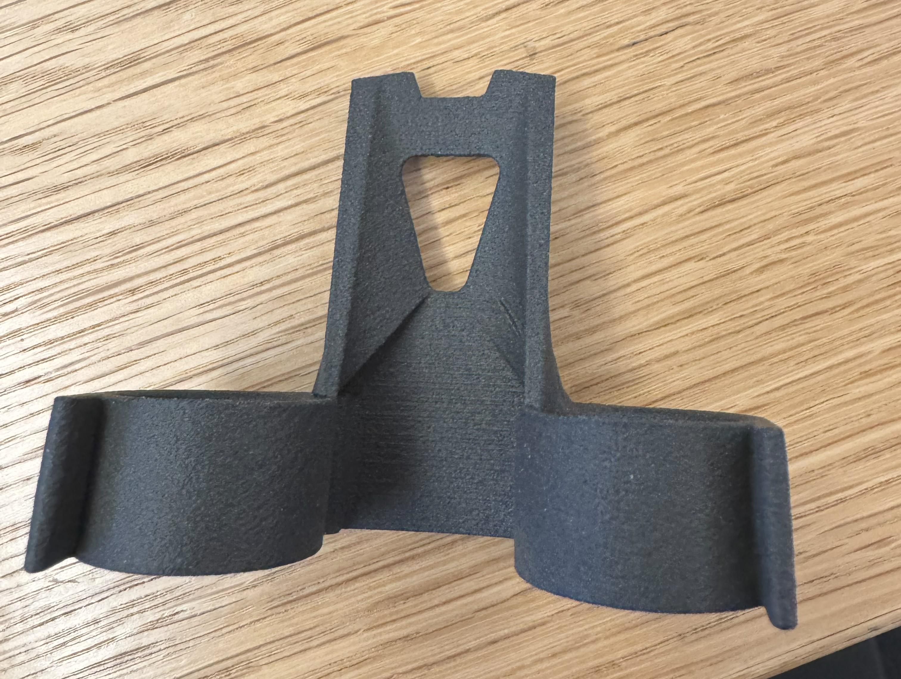 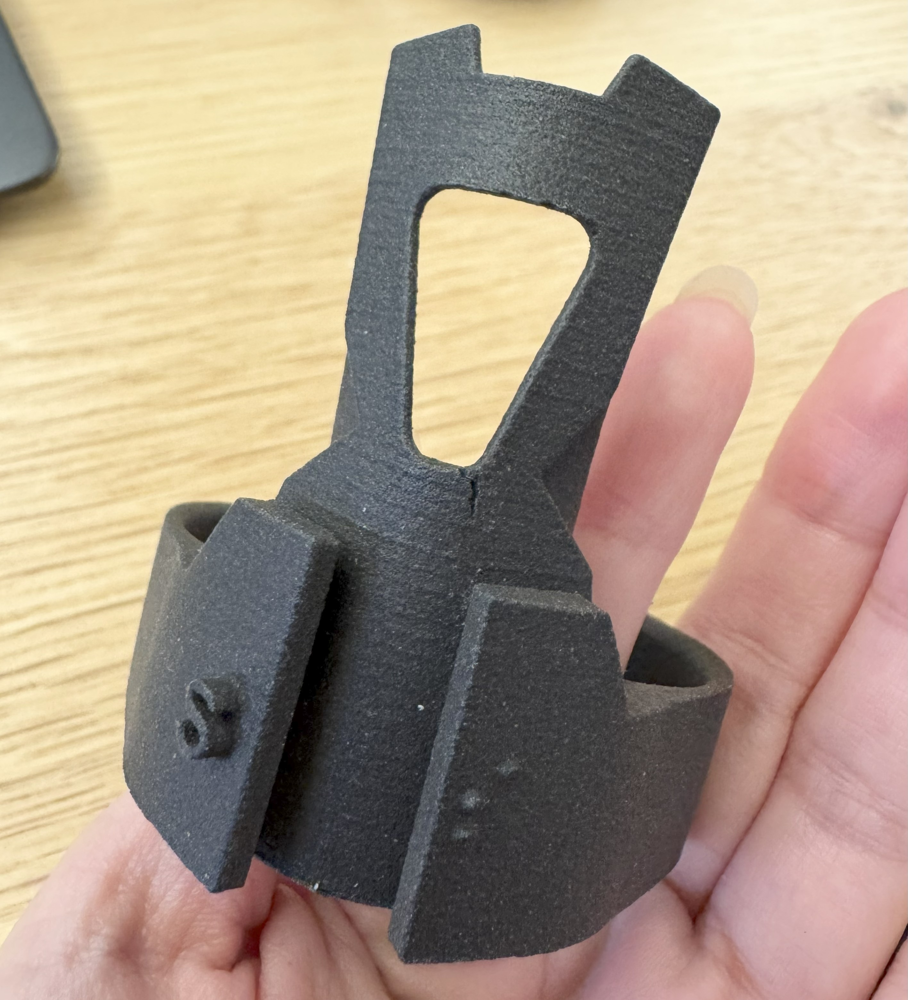Updating the CAD Model
The previous eating tool design was reversed engineered to create a new CAD model with simpler shapes that are easier to modify, without compromising the design and usability. Model issues were fixed in this revised version.
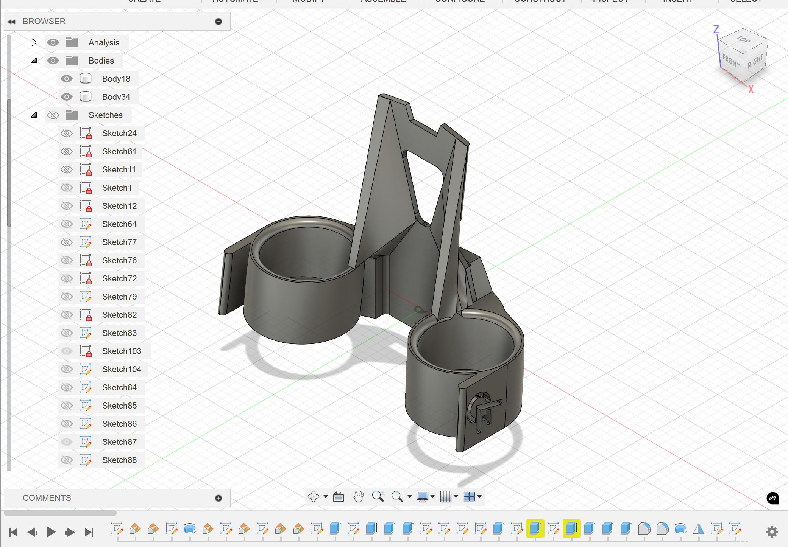 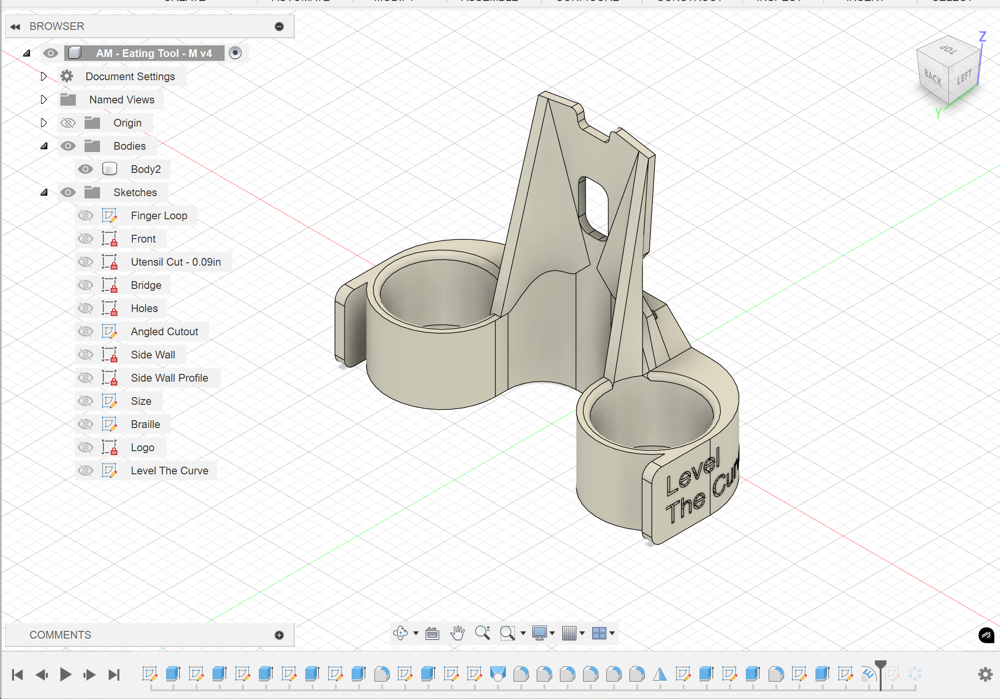Prototypes
One of the tasks was to find a design that is both flexible and strong. The center hole provided flexibility, but also caused stress concentration around the opening. Various designs were created and 3D printed to test the best hole shape and configuration.
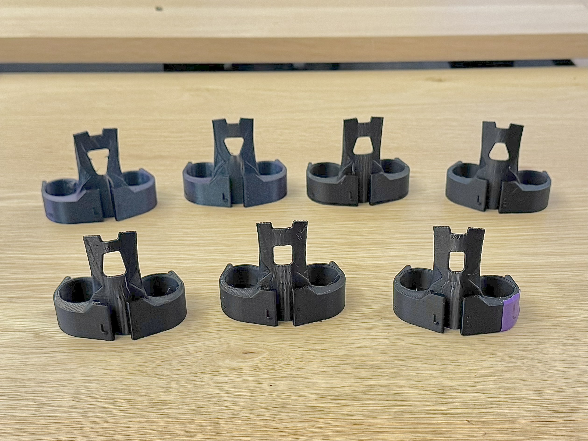New Design Features
Loft thickness was increased to reduce breakage in the manufacturing process. Hole designs that caused a thinner loft were rejected.
 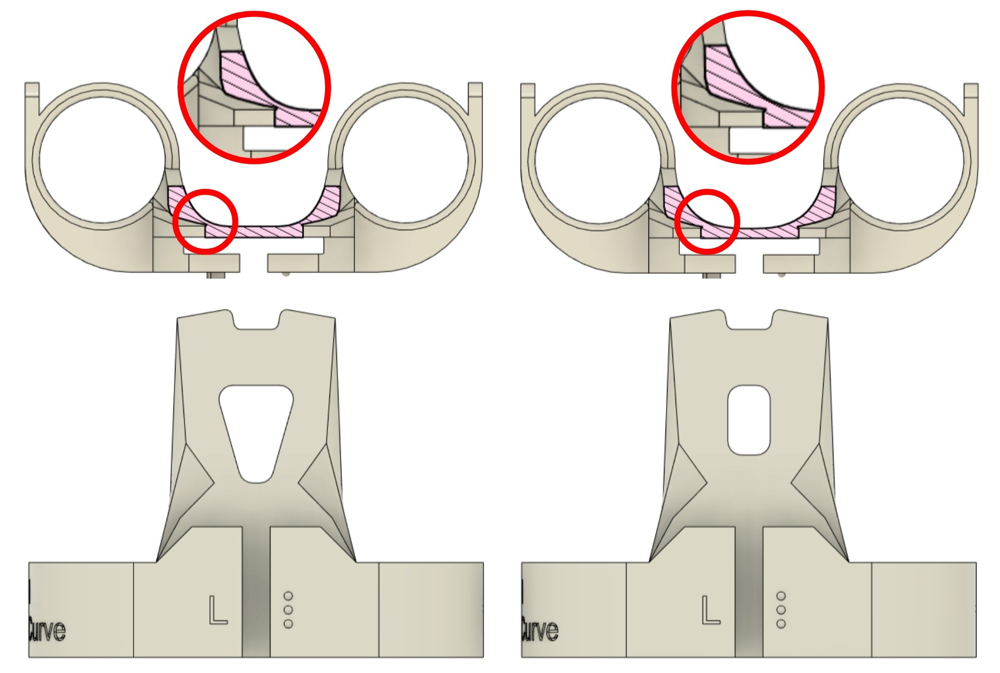
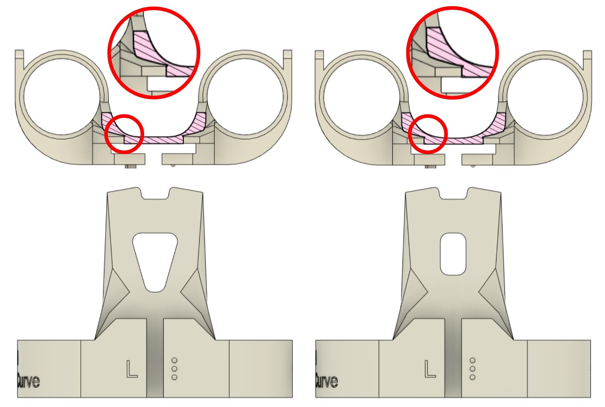
One of the logos on the side were changed to the full name in order to make the branding clearer and provide users with a company name that can be searched for.
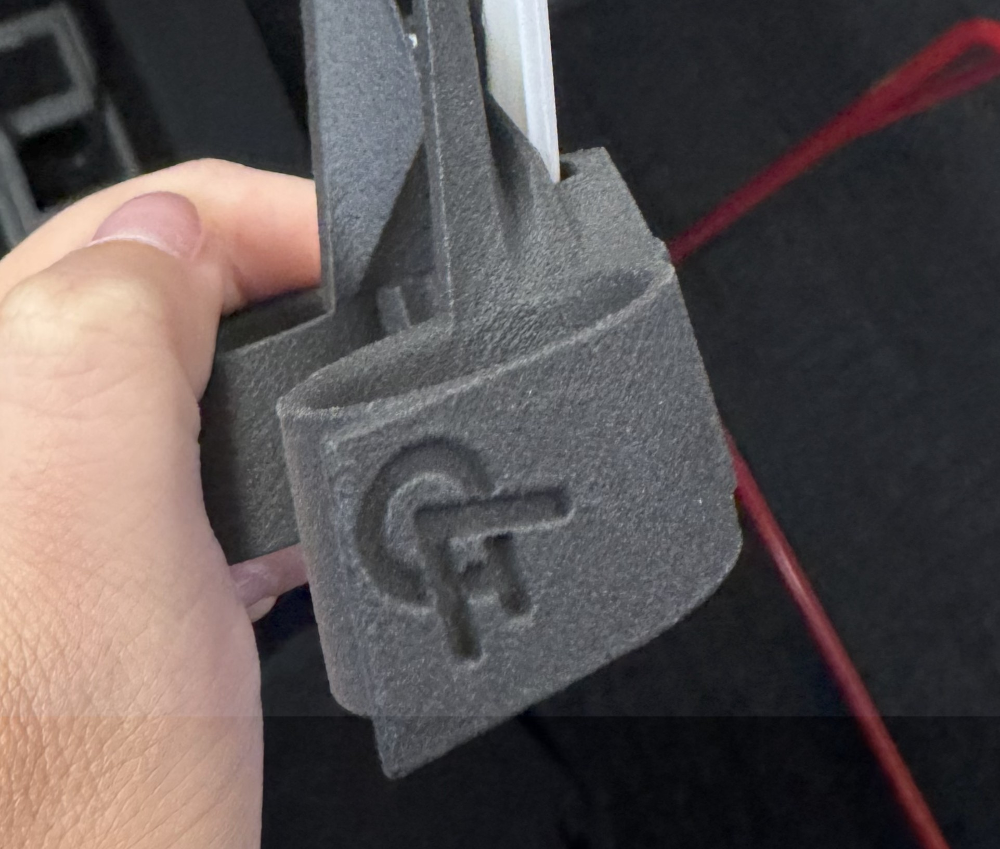 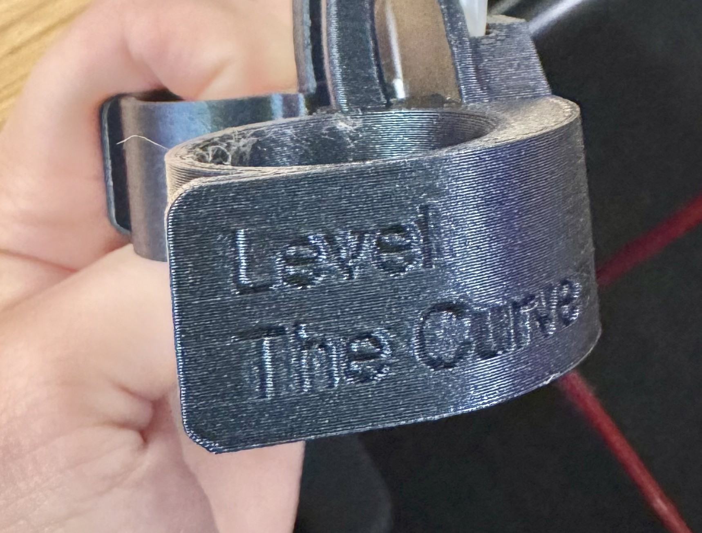Final Product Render
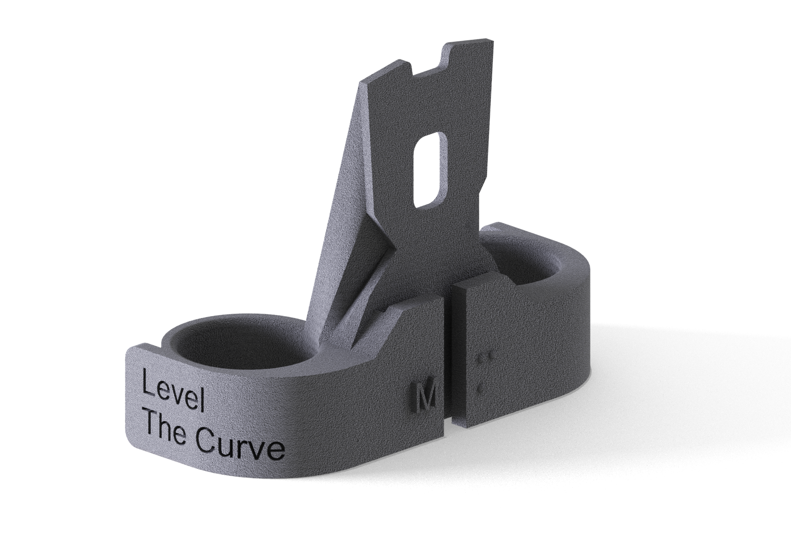 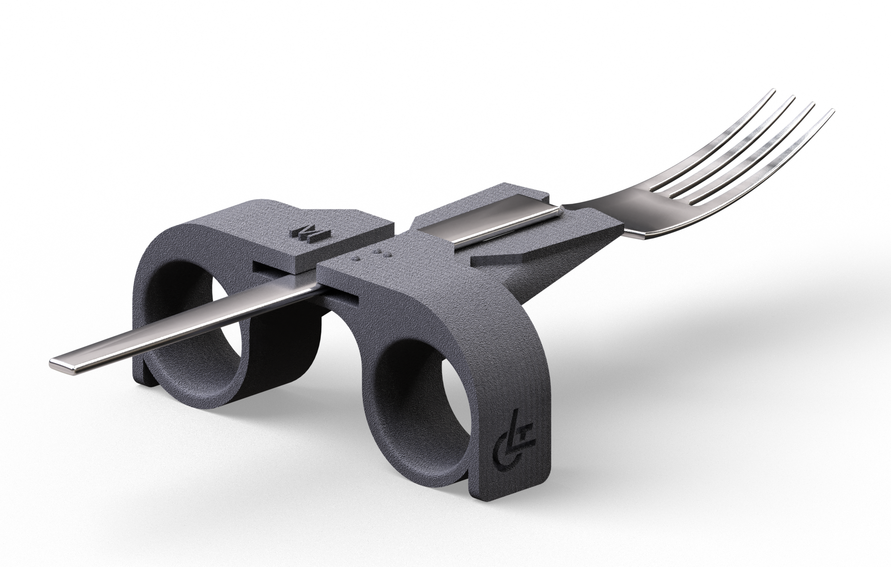
Packaging - In Progress
Some packaging accessibility concerns that were considered were ease of opening, ease of unwrapping, and ease of throwing out.
Additionally, in order to keep the overall cost down, the package had to be readily available commercially to avoid custom packaging design costs.
A paper padded mailer with a pull tab seemed to be a simple and cost-effective solution, providing easy opening and easy recycling.
In order to ensure that the eating tools will last the journey, we will test mail them, but expect them to be sturdy enough.
In order to personalize the experience, thank you cards and designs on the outside of the mailer (possibly from artists with disabilities) can be added.
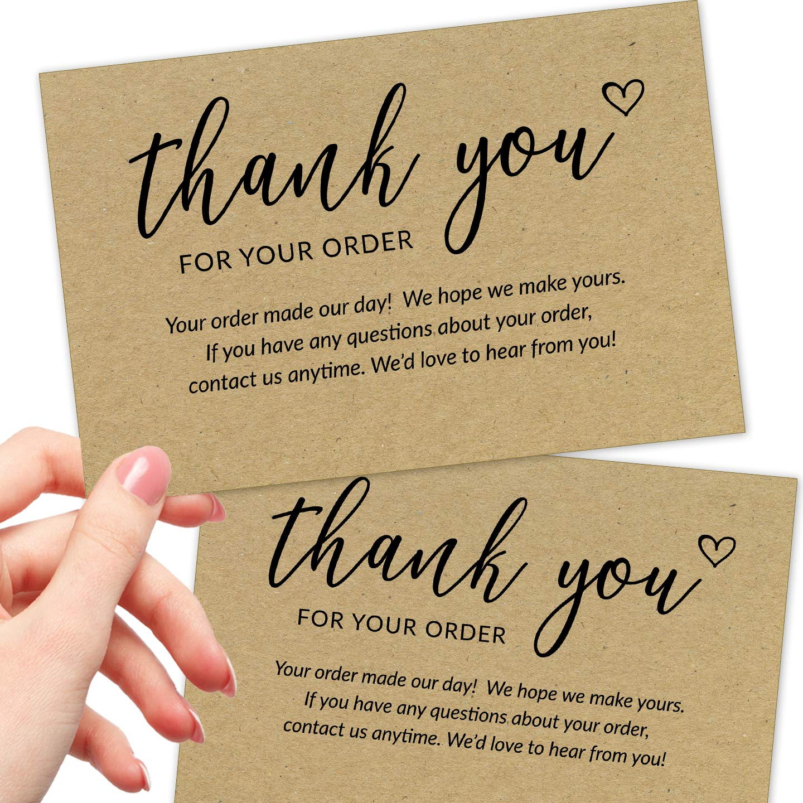 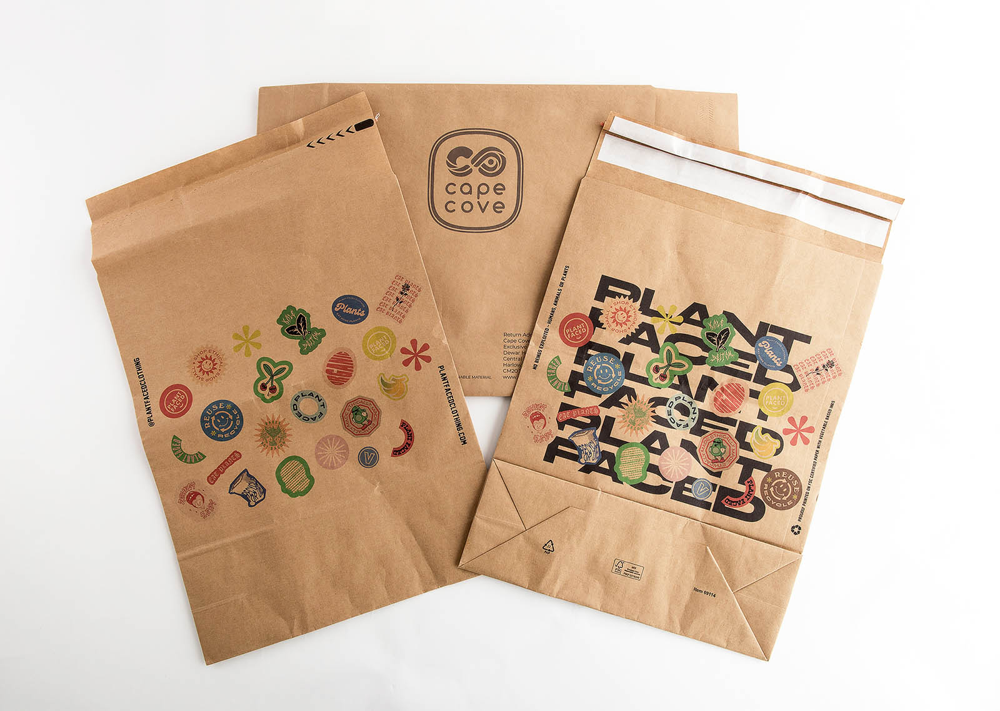